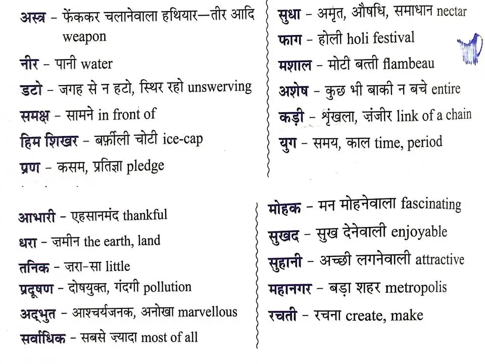

Proverbs
Hindi kavi Kamayani by jaishankar_prashad purano ki kahaniya Hindi kahaniyaa Bhakti satsang Ramayan_by_ami Mahabharat_by_ami 
माखनलाल चतुर्वेदी
मैथिलीशरण गुप्त
हरिवंशराय बच्चन
महादेवी वर्मा
सुमित्रानंदन पंत
जयशंकर प्रसाद
सूर्यकांत त्रिपाठी
रामधारी सिंह दिनकर
अब्दुल रहीम ख़ान-ए-ख़ाना